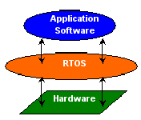
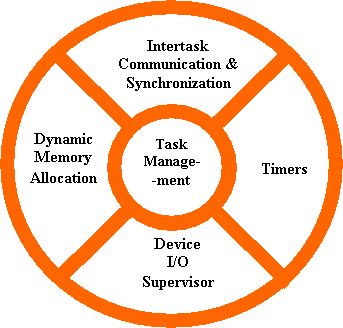
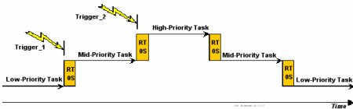
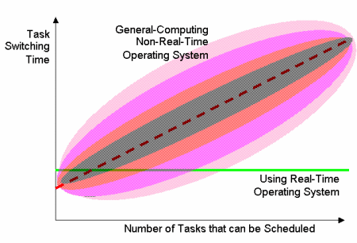
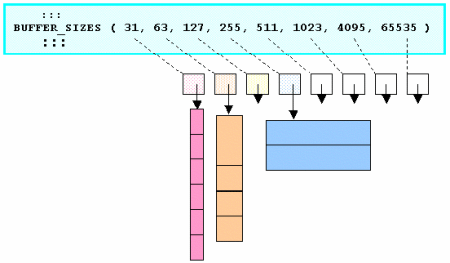

|
|
| Basic concepts of real-time operating systems |
by David Kalinsky (Nov. 18, 2003)
The fundamentals
To most people, embedded systems are not recognizable as computers. Instead, they are hidden inside everyday objects that surround us and help us in our lives. Embedded systems typically do not interface with the outside world through familiar personal computer interface devices such as a mouse, keyboard and graphic user interface. Instead, they interface with the outside world through unusual interfaces such as sensors, actuators and specialized communication links.
Real-time and embedded systems operate in constrained environments in which computer memory and processing power are limited. They often need to provide their services within strict time deadlines to their users and to the surrounding world. It is these memory, speed and timing constraints that dictate the use of real-time operating systems in embedded software.
Basic kernel services
In the discussion below, we will focus on the "kernel" – the part of an operating system that provides the most basic services to application software running on a processor.
The "kernel" of a real-time operating system ("RTOS") provides an "abstraction layer" that hides from application software the hardware details of the processor (or set of processors) upon which the application software will run. This is shown in Figure1.

Figure 1: An RTOS Kernel provides an Abstraction Layer between Application Software and Embedded Hardware
In providing this "abstraction layer" the RTOS kernel supplies five main categories of basic services to application software, as seen in Figure 2.

Figure 2: Basic Services Provided by a Real-Time Operating System Kernel
The most basic category of kernel services, at the very center of Figure 2, is Task Management. This set of services allows application software developers to design their software as a number of separate "chunks" of software -- each handling a distinct topic, a distinct goal, and perhaps its own real-time deadline. Each separate "chunk" of software is called a "task." Services in this category include the ability to launch tasks and assign priorities to them. The main RTOS service in this category is the scheduling of tasks as the embedded system is in operation. The Task Scheduler controls the execution of application software tasks, and can make them run in a very timely and responsive fashion. [Later, we will see the details of how this is done.]
The second category of kernel services, shown at the top of Figure 2, is Intertask Communication and Synchronization. These services make it possible for tasks to pass information from one to another, without danger of that information ever being damaged. They also make it possible for tasks to coordinate, so that they can productively cooperate with one another. Without the help of these RTOS services, tasks might well communicate corrupted information or otherwise interfere with each other.
Since many embedded systems have stringent timing requirements, most RTOS kernels also provide some basic Timer services, such as task delays and time-outs. These are shown on the right side of Figure 2.
Many (but not all) RTOS kernels provide Dynamic Memory Allocation services. This category of services allows tasks to "borrow" chunks of RAM memory for temporary use in application software. Often these chunks of memory are then passed from task to task, as a means of quickly communicating large amounts of data between tasks. Some very small RTOS kernels that are intended for tightly memory-limited environments, do not offer Dynamic Memory Allocation services.
Many (but not all) RTOS kernels also provide a "Device I/O Supervisor" category of services. These services, if available, provide a uniform framework for organizing and accessing the many hardware device drivers that are typical of an embedded system. [For more information on this, please visit: the device drivers page at the Kalinsky Associates Website]
In addition to kernel services, many RTOSs offer a number of optional add-on operating system components for such high-level services as file system organization, network communication, network management, database management, user-interface graphics, etc. Although many of these add-on components are much larger and much more complex than the RTOS kernel, they rely on the presence of the RTOS kernel and take advantage of its basic services. Each of these add-on components is included in an embedded system only if its services are needed for implementing the embedded application, in order to keep program memory consumption to a minimum.
In this paper, we will focus on the basic RTOS kernel services for task management, intertask communication and synchronization, and dynamic memory allocation.
RTOSs vs. general-purpose operating systems
Many non-real-time operating systems also provide similar kernel services. The key difference between general-computing operating systems and real-time operating systems is the need for " deterministic " timing behavior in the real-time operating systems. Formally, "deterministic" timing means that operating system services consume only known and expected amounts of time. In theory, these service times could be expressed as mathematical formulas. These formulas must be strictly algebraic and not include any random timing components. Random elements in service times could cause random delays in application software and could then make the application randomly miss real-time deadlines – a scenario clearly unacceptable for a real-time embedded system.
General-computing non-real-time operating systems are often quite non-deterministic. Their services can inject random delays into application software and thus cause slow responsiveness of an application at unexpected times. If you ask the developer of a non-real-time operating system for the algebraic formula describing the timing behavior of one of its services (such as sending a message from task to task), you will invariably not get an algebraic formula. Instead the developer of the non-real-time operating system (such as Windows, Unix or Linux) will just give you a puzzled look. Deterministic timing behavior was simply not a design goal for these general-computing operating systems.
On the other hand, real-time operating systems often go a step beyond basic determinism. For most kernel services, these operating systems offer constant load-independent timing: In other words, the algebraic formula is as simple as: T(message_send) = constant , irrespective of the length of the message to be sent, or other factors such as the numbers of tasks and queues and messages being managed by the RTOS.
Task scheduling
Most RTOSs do their scheduling of tasks using a scheme called "priority-based preemptive scheduling." Each task in a software application must be assigned a priority, with higher priority values representing the need for quicker responsiveness. Very quick responsiveness is made possible by the "preemptive" nature of the task scheduling. "Preemptive" means that the scheduler is allowed to stop any task at any point in its execution, if it determines that another task needs to run immediately.
The basic rule that governs priority-based preemptive scheduling is that at every moment in time, "The Highest Priority Task that is Ready to Run, will be the Task that Must be Running." In other words, if both a low-priority task and a higher-priority task are ready to run, the scheduler will allow the higher-priority task to run first. The low-priority task will only get to run after the higher-priority task has finished with its current work.
What if a low-priority task has already begun to run, and then a higher-priority task becomes ready? This might occur because of an external world trigger such as a switch closing. A priority-based preemptive scheduler will behave as follows: It will allow the low-priority task to complete the current assembly-language instruction that it is executing. [But it won’t allow it to complete an entire line of high-level language code; nor will it allow it to continue running until the next clock tick.] It will then immediately stop the execution of the low-priority task, and allow the higher-priority task to run. After the higher-priority task has finished its current work, the low-priority task will be allowed to continue running. This is shown in Figure 3, where the higher-priority task is called "Mid-Priority Task."
Of course, while the mid-priority task is running, an even higher-priority task might become ready. This is represented in Figure 3 by "Trigger_2" causing the "High-Priority Task" to become ready. In that case, the running task ("Mid-Priority Task") would be preempted to allow the high-priority task to run. When the high-priority task has finished its current work, the mid-priority task would be allowed to continue. And after both the high-priority task and the mid-priority task complete their work, the low-priority task would be allowed to continue running. This situation might be called "nested preemption."

Figure 3: Timeline for Priority-based Preemptive Scheduling Examples
Each time the priority-based preemptive scheduler is alerted by an external world trigger (such as a switch closing) or a software trigger (such as a message arrival), it must go through the following 5 steps:- Determine whether the currently running task should continue to run. If not …
- Determine which task should run next.
- Save the environment of the task that was stopped (so it can continue later).
- Set up the running environment of the task that will run next.
- Allow this task to run.
These 5 steps together are called "task switching."
Fixed-time task switching
The time it takes to do task switching is of interest when evaluating an operating system. A simple general-computing (non-preemptive) operating system might do task switching only at timer tick times, which might for example be ten milliseconds apart. Then if the need for a task switch arises anywhere within a 10-millisecond timeframe, the actual task switch would occur only at the end of the current 10-millisecond period. Such a delay would be unacceptable in most real-time embedded systems.
In more sophisticated preemptive task schedulers, the scheduler may need to search through arrays of tasks to determine which task should be made to run next. If there are more tasks to search through, the search will take longer. Such searches are often done by general-computing operating systems, thus making them non-deterministic. Real-time operating systems, on the other hand, avoid such searches by using incrementally updated tables that allow the task scheduler to identify the task that should run next in a rapid fixed-time fashion.
These two types of timing behavior for task switching can be seen in Figure 4.

Figure 4: Task Switching Timing
In this figure, we see that for a general-computing (non-real-time) operating system, the task switching time generally rises as a software system includes more tasks that can be scheduled. However, the actual time for a task switch is not the time shown by the dashed red line. Instead, in any given task switch instance, it might be well above or well below the time shown by the dashed red line. The shaded regions surrounding the dashed red line simply show the likelihood of the actual task switch time being that far above or below the dashed red line.
On the other hand, the horizontal solid green line shows the task switching time characteristic of a real-time operating system. It is constant, independent of any load factor such as the number of tasks in a software system.
Please note that in some instances, such as the leftmost area of the graph, the task switching time might in special cases be quicker for a general-computing non-real-time operating system, than for a real-time operating system. This does not detract from the appropriateness of a real-time operating system for real-time embedded applications. For, in fact, the term "real-time" does not mean "as fast as possible" but rather "real-time" demands consistent, repeatable, known timing performance. Although a non-real-time operating system might do some faster task switching for small numbers of tasks, it might equally well introduce a long time delay the next time it does the same task switch. The strength of a real-time operating system is in its known, repeatable timing performance, which is also typically faster than that of a non-deterministic task scheduler in situations of large numbers of tasks in a software system. Most often, the real-time operating system will exhibit task-switching times much faster than its non-real-time competitor when the number of tasks grows above 5 or 10.
Intertask communication and synchronization
Most operating systems, including RTOSs, offer a variety of mechanisms for communication and synchronization between tasks. These mechanisms are necessary in a preemptive environment of many tasks, because without them the tasks might well communicate corrupted information or otherwise interfere with each other.
For instance, a task might be preempted when it is in the middle of updating a table of data. If a second task that preempts it reads from that table, it will read a combination of some areas of newly-updated data plus some areas of data that have not yet been updated. [New Yorkers would call this a "mish-mash."] These updated and old data areas together may be incorrect in combination, or may not even make sense. An example is a data table containing temperature measurements that begins with the contents "10 C." A task begins updating this table with the new value "99 F", writing into the table character-by-character. If that task is preempted in the middle of the update, a second task that preempts it could possibly read a value like "90 C" or "99 C." or "99 F", depending on precisely when the preemption took place. The partially updated values are clearly incorrect, and are caused by delicate timing coincidences that are very hard to debug or reproduce consistently.
An RTOS's mechanisms for communication and synchronization between tasks are provided to avoid these kinds of errors. Most RTOSs provide several mechanisms, with each mechanism optimized for reliably passing a different kind of information from task to task.
Probably the most popular kind of communication between tasks in embedded systems is the passing of data from one task to another. Most RTOSs offer a message passing mechanism for doing this, as seen in Figure 5. Each message can contain an array or buffer of data.
Figure 5: Intertask Message Communication
If messages can be sent more quickly than they can be handled, the RTOS will provide message queues for holding the messages until they can be processed. This is shown in Figure6.
Another kind of communication between tasks in embedded systems is the passing of what might be called "synchronization information" from one task to another. "Synchronization information" is like a command, where some commands could be positive, and some negative. For example, a negative command to a task would be something like "Please don’t print right now, because my task is using the printer." Or more generally, "I want to lock the . . . for my own use only." A positive command would be something like "I’ve detected a cardiac emergency, and I want you to help me handle it." Or more generally, "Please join me in handling . . ."
Most RTOSs offer a semaphore or mutex mechanism for handling negative synchronization (sometimes called "mutual exclusion"). These mechanisms allow tasks to lock certain embedded system resources for their use only, and subsequently to unlock the resource when they’re done.
For positive synchronization, different RTOSs offer different mechanisms. Some RTOSs offer event-flags, while others offer signals. And yet others rely on message passing for positive synchronization as well as data passing duties.
Determinism and high-speed message passing
Intertask message communication is another area where different operating systems show different timing characteristics. Most operating systems actually copy messages twice as they transfer them from task to task via a message queue. See Figure 6. The first copying is from the message-sender task to an operating system-owned "secret" area of RAM memory (implementing the "message queue"); and the second copying is from the operating system’s "secret" RAM area to the message-receiver task. Clearly this is non-deterministic in its timing, as these copying activities take longer as message length increases.
Figure 6: Message Transfer via Message Queue
An approach that avoids this non-determinism and also accelerates performance, is to have the operating system copy a pointer to the message and deliver that pointer to the message-receiver task without moving the message contents at all. In order to avoid access collisions, the operating system then needs to go back to the message-sender task and obliterate its copy of the pointer to the message. For large messages, this eliminates the need for lengthy copying and eliminates non-determinism.
Dynamic memory allocation
Determinism of service times is also an issue in the area of dynamic allocation of RAM memory. Many general-computing non-real-time operating systems offer memory allocation services from what is termed a "Heap." The famous "malloc" and "free" services known to C-language programmers work from a heap. Tasks can temporarily borrow some memory from the operating system’s heap by calling "malloc", and specifying the size of memory buffer needed. When this task (or another task) is finished with this memory buffer it can return the buffer to the operating system by calling "free." The operating system will then return the buffer to the heap, where its memory might be used again, perhaps as part of a larger buffer. Or perhaps it may in the future be broken into several smaller buffers.
Heaps suffer from a phenomenon called "External Memory Fragmentation" that may cause the heap services to degrade. This fragmentation is caused by the fact that when a buffer is returned to the heap, it may in the future be broken into smaller buffers when "malloc" requests for smaller buffer sizes occur. After a heap undergoes many cycles of "malloc"s and "free"s, small slivers of memory may appear between memory buffers that are being used by tasks. These slivers are so small that they are useless to tasks. But they are trapped between buffers that are being used by tasks, so they can’t be coagulated ("glued") together into bigger, useful buffer sizes. Over time, a heap will have more and more of these slivers. This will eventually result in situations where tasks will ask for memory buffers ("malloc") of a certain size, and they will be refused by the operating system --- even though the operating system has enough available memory in its heap. The problem: That memory is scattered in small slivers distributed in various separate parts of the heap. In operating system terminology, the slivers are called "fragments", and this problem is called "external memory fragmentation."
This fragmentation problem can be solved by so-called "garbage collection" (defragmentation) software. Unfortunately, "garbage collection" algorithms are often wildly non-deterministic – injecting randomly-appearing random-duration delays into heap services. These are often seen in the memory allocation services of general-computing non-real-time operating systems.
This puts the embedded system developer who wants to use a general-computing non-real-time operating system into a quandry: Should the embedded system be allowed to suffer occasional randomly-appearing random-duration delays if / when "garbage collection" kicks in?... Or, alternatively, should the embedded system be allowed to fragment its memory until application software "malloc" requests to the heap are refused even though a sufficient total amount of free memory is still available? Neither alternative is acceptable for embedded systems that need to provide service continually for long periods of time.
Real-time operating systems, on the other hand, solve this quandry by altogether avoiding both memory fragmentation and "garbage collection", and their consequences. RTOSs offer non-fragmenting memory allocation techniques instead of heaps. They do this by limiting the variety of memory chunk sizes they make available to application software. While this approach is less flexible than the approach taken by memory heaps, they do avoid external memory fragmentation and avoid the need for defragmentation. For example, the "Pools" memory allocation mechanism allows application software to allocate chunks of memory of perhaps 4 or 8 different buffer sizes per pool. Pools totally avoid external memory fragmentation, by not permitting a buffer that is returned to the pool to be broken into smaller buffers in the future. Instead, when a buffer is returned the pool, it is put onto a "free buffer list" of buffers of its own size that are available for future re-use at their original buffer size. This is shown in Figure 7.

Figure 7: A Memory Pool's Free Buffer Lists
Memory is allocated and de-allocated from a pool with deterministic, often constant, timing.
Summary
Real-time and embedded systems are used in many applications such as airborne computers, medical instruments and communication systems. Embedded systems are characterized by limited processor memory, limited processing power, and unusual interfaces to the outside world. Real-time requirements impose stringent time deadlines for delivering the results of embedded processing.
RTOS kernels hide from application software the low-level details of system hardware, and at the same time provide several categories of services to application software. These include: task management with priority-based preemptive scheduling, reliable intertask communication and synchronization, non-fragmenting dynamic memory allocation, and basic timer services.
The issue of timing determinism is important in differentiating general-computing operating systems from real-time operating systems. This issue crops up in many parts of operating system kernels, such as task schedulers, dynamic memory allocation and intertask message communication. While general-computing operating systems often offer non-deterministic services in these areas, fully deterministic solutions are needed for real-time and embedded systems. A number of real-time operating systems implement these solutions in their compact high-performance kernels.
About the author: David Kalinsky is a popular lecturer and seminar leader on technologies for embedded software. He regularly presents classes at the Embedded Systems Conferences in the US and Europe, on topics such as "Architectural Design of Device I/O Drivers," and "Principles of High-Availability Embedded Systems Design." During the past 15 years, David has built high-tech training programs for a number of Silicon Valley companies on the development of real-time and embedded systems. Before that, he was involved in the design of embedded medical and aerospace systems. David holds a Ph.D. in nuclear physics from Yale. He can be reached at david@kalinskyassociates.com. An online sample lecture, course list, schedule, and price list are available on the Kalinsky Associates Website.
Copyright © 2004, D. Kalinsky Associates; all rights reserved. Reproduced by LinuxDevices.com with permission.
Related Stories:
 |
|
|
|
|
|
|
|
 Use of this site is governed by our
Terms of Use
and Privacy Policy.
Except where otherwise specified, the contents of this site are copyright © 1999-2005
Ziff Davis Publishing Holdings Inc.
All Rights Reserved. Reproduction in whole or in part without permission is prohibited. Linux is a registered trademark of Linus Torvalds. All other marks are the property of their respective owners.
Use of this site is governed by our
Terms of Use
and Privacy Policy.
Except where otherwise specified, the contents of this site are copyright © 1999-2005
Ziff Davis Publishing Holdings Inc.
All Rights Reserved. Reproduction in whole or in part without permission is prohibited. Linux is a registered trademark of Linus Torvalds. All other marks are the property of their respective owners.


 news feed
news feed